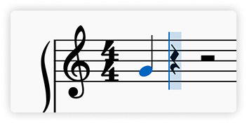
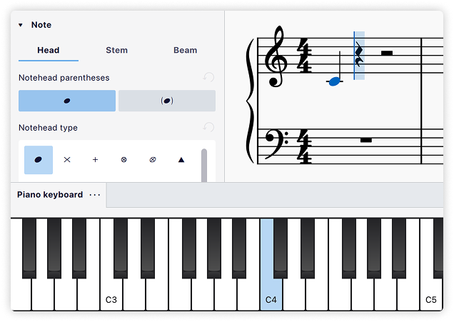
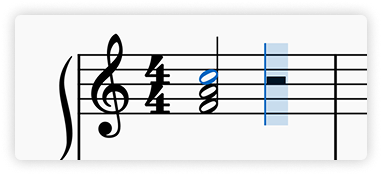
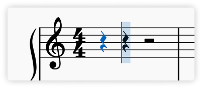
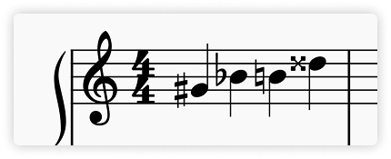
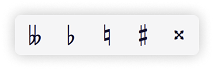
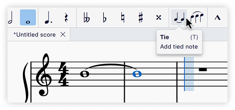
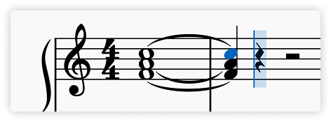

Entering notes and rests
This page explains music creation on standard staves. See also the [tablature](%1) and [percussion](%2) pages.
MuseScore Studio supports inputting music via the computer keyboard, mouse, a MIDI keyboard, and the in-app virtual piano keyboard.
The simplest way to start entering notes or rests is to first choose a duration in the toolbar, then either:
- Click on the stave to enter a note
- Type a pitch letter (
A–G) to enter a note - Type
0to enter a rest
Note input modes
This page explains the default note input mode, Input by note name. In this mode, you choose a duration first, then select a pitch to place notes in the score.
In Input by duration mode, the steps are reversed: first, you choose a pitch, then select a duration to place notes in the score.
For more entry modes, see Alternative note input methods.
Entering notes
Selecting a start point
To add a note or rest to the score, start by selecting a location to begin entry. You can use the mouse or the keyboard navigation commands.

Entering note input mode
Next, enter note input mode by pressing N or clicking the pencil icon in the toolbar. The note input cursor appears, indicating where the next note will be added in the score.

If you don't select a starting location first, MuseScore places the cursor at the last input position, or in some other logical place, so be sure the cursor is where you intend.
Enter notes left to right by first selecting a duration and then entering a pitch or rest. When you are done entering notes in this location and are ready to do something else—for example, entering notes at a different location, adding other markings, or performing other operations like copy and paste—you can exit note input mode by clicking the Input by note name button, pressing N again, or pressing Esc.
MuseScore Studio has virtually unlimited undo history, so you don't have to worry about making mistakes. Just click the **Undo** button on the far right of the toolbar, or use the standard keyboard shortcut `Ctrl`+`Z` (Mac: `Cmd`+`Z`).
Selecting duration
While in note input mode, select a note value for the next note to be entered by:
- Clicking a corresponding note icon in the Note input toolbar (directly above the score window), or
- Entering the keyboard shortcut
1–9corresponding to the desired duration

The keyboard shortcuts are designed to be efficient and easy to remember. The most common note values—eighth, quarter, and half—are assigned to the keys 4, 5, and 6 respectively (the middle row of a numeric keypad). Shorter note values are represented by smaller numbers, and longer values by larger numbers. The full list is as follows:
Other durations, including double dots and 128th notes, can be selected by customizing your toolbar or defining your own keyboard shortcuts.
Selecting pitch
Once you've selected a duration, enter pitches using the computer keyboard, mouse, MIDI keyboard, or virtual piano keyboard.
Use ↑ or ↓ after entering a note to move it up or down by a half step.
Selecting pitch using the computer keyboard
This is generally the most efficient way to enter notes in MuseScore.
Simply press the letter (A–G) on your computer keyboard that corresponds to the pitch you want to enter.

Notes entered this way will replace any rests or notes that were already present at the cursor location. To add a note to an existing note or chord, hold Shift while pressing the letter of the new note. See the section on chords below for more information.
When entering notes by letter name, MuseScore will choose the octave that is closest to the previous note on that stave. This works well for passages that move mostly by steps and small leaps. If you need to change the octave for a larger leap, use `Ctrl`+`↑` and `Ctrl`+`↓` (Mac: `Cmd`+`↑` and `Cmd`+`↓`) to raise or lower the pitch of the previously-entered note by an octave.
Selecting pitch using the mouse
To enter a note using the mouse, position your mouse on the desired line or space in the stave, then click. The mouse cursor will show you a preview of the note you are about to enter to help you place it accurately.

If any notes already exist at the point where you are entering a new note, clicking will add notes to the chord. To replace existing notes instead, hold Shift while entering the new note.
It can be difficult to enter notes very far above or below a stave with this method, because MuseScore may interpret clicks far from the intended stave as an attempt to add notes to the stave above or below. Instead, try entering the note an octave lower or higher, then raise or lower the pitch by an octave using Ctrl+↑ and Ctrl+↓ (Mac: Cmd+↑ and Cmd+↓).
Note: Although one would normally enter notes left to right, the mouse entry method allows you to enter a note at any location where there is an existing note or rest to replace.
Selecting pitch using a MIDI keyboard
If you have a MIDI keyboard connected, enter notes while in note input mode by simply pressing the corresponding keys.
When playing notes on a MIDI keyboard, they are entered consecutively so long as you release each key fully before pressing the next. Create chords by pressing multiple MIDI keys at the same time.
Notes entered via MIDI keyboard that are outside of the current key signature will have accidentals applied automatically, but the spelling of the accidental may not be what you intend. To change the enharmonic spelling of a selected note, press J.
You can [select duration using a MIDI keyboard](%1) if you set up the keys you wish to use for this in advance in **Preferences → MIDI mappings**.
Selecting pitch using the virtual piano keyboard
You can also input notes using the on-screen Piano keyboard panel. To display this, use View → Piano keyboard or press the shortcut P. The panel can be closed the same way.

To enter a note, simply click the appropriate piano key with your mouse.
As with the computer keyboard, notes entered in this way replace any existing notes or rests. To create chords instead, press and hold Shift while entering notes.
To resize the keyboard, position the mouse within the panel and hold `Ctrl` (Mac: `Cmd`) while scrolling up or down.
Entering chords
For the purpose of this section, chords are any combination of multiple notes all starting at the same time, all sharing the same duration, and all sharing a single stem.

If you wish to enter notes that sound together but start at different times, have different durations, or have separate stems, see Voices. For chords represented as text, like Dm7, see Chord symbols.
Just as for individual notes, chords can be entered by computer keyboard, mouse, MIDI keyboard, or virtual piano keyboard. Except for MIDI keyboard (where you can enter multiple notes at once), notes are entered one at a time, but in a way that tells MuseScore to combine them into a chord rather than add them sequentially.
Adding by pitch name
To add a note to a chord by pitch name:
- Computer keyboard: Hold
Shiftwhile entering the note usingA–G - The next note will be added above any notes already present at the cursor location, so when building a chord it's easiest to start by entering the lowest note first.
- Mouse: Click the location where you wish to add the note
- MIDI keyboard: Either play all the notes at the same time, or play them one at a time but do not release one key before pressing the next
- Virtual piano keyboard: Hold
Shiftwhile clicking a key in the piano panel
Adding by interval
You can also specify the note to be added based on the interval above or below the currently-selected note.
- To add an interval above the selected note, use one of the following:
- Press
Alt+1-9(Mac:Opt+1-9), or - In the Note input toolbar, select Add → Intervals and choose an interval from the list
- For intervals below the selected note, you can apply a custom shortcut of your own in Preferences → Shortcuts (search "interval" to see the relevant actions)
Entering rests
Rests can be entered using the computer keyboard or mouse. First, select a duration (e.g., using the toolbar or by pressing 1–9), then instead of entering a pitch as you would for a note, do one of the following options:
- From the computer keyboard: Press
0 - From the note input toolbar: Click the rest icon, then click in the score
- Using a mouse: Right-click in the score

Applying accidentals

Standard accidentals (flat, natural, sharp, double flat, double sharp) can be entered either by selecting one in the toolbar before entering the pitch it applies to or by adding them to a note already entered.
Selecting an accidental before entering a pitch
To specify an accidental to be applied to the next note entered, you can use the buttons on the Note input toolbar above the score or the corresponding keyboard shortcuts. This can be done either before or after selecting the duration.

The default accidental shortcuts are:
- Flat:
- - Sharp:
+ - Natural:
=
By default, accidentals are applied to the next note entered. So for example, if you want to enter a B♭, first press - then press B. You can change this behaviour in Preferences → Note input → Apply accidentals, augmentation dots, and articulations.
The usual rules of music notation apply, so if you apply a flat to a note, any subsequent notes you enter of that same pitch within the same bar will be flatted as well, even though no explicit flat sign will be added in front of them.
Adding an accidental after entering a pitch
Appropriate accidentals are automatically added to a note when you increase or decrease its pitch:
- Move pitch up a semitone (spells with sharps):
↑ - Move pitch down a semitone (spells with flats):
↓
You can also apply an accidental to a note by clicking the appropriate icon in the Accidentals palette. This palette also contains a large number of microtonal and other special accidentals.
Adding courtesy/cautionary accidentals
Although the rules of music notation say that a barline cancels an accidental, and that any note on the same stave line or space in the next bar returns to the pitch indicated by the key signature, it is considered good practice to add a courtesy (also called cautionary) accidental anyway. These do not change the pitch of the note, so they cannot be added with the ↑ and ↓ keys. However, any of the other methods described above work.
While parentheses or brackets are not required for courtesy accidentals, some editors choose to use them. To add parentheses or brackets around an accidental, you will need to temporarily leave note input mode, select the accidental, then either use the Properties panel to select a bracket type, or click the parentheses or brackets in the More section of the Accidentals palette.
You can also use the **Courtesy Accidentals** [plugin](%1) that comes pre-installed with MuseScore Studio to automatically add courtesy accidentals where appropriate.
Entering ties
A tie is a curved line between two notes of the same pitch which indicates that they are to be played as one combined duration. Though they look similar, ties are not to be confused with slurs, which join any number of notes of any pitches and indicate legato articulation.
Because ties are always between notes of the same pitch, you do not need to enter the pitch for the second note. After entering the first note:
- Select the duration for the second note, (either by clicking the duration on the top toolbar or using the keyboard shortcuts
1-9) - Click the tie button on the toolbar or type
T.

The tie command creates the tie and adds the second note at the same time. If the first note you entered is part of a chord, the tie command creates an entire second chord with the same pitches as the first and ties all of the notes together.

Ties normally connect adjacent notes in the same [voice](%1), but MuseScore also supports ties between non-adjacent notes and between notes in different voices as described in [the section on editing](%2). Ties can also be entered [across repeats and jumps](%3).